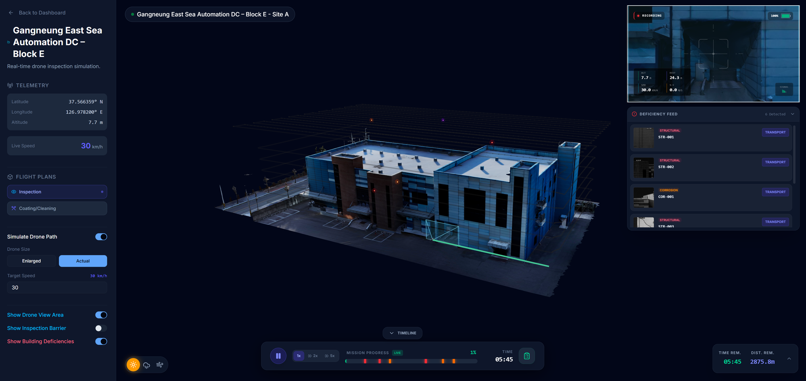

DIMS Showcase (the Prototype)
There are two DIMS codebases, and on day one people mix them up constantly. Chapters 12–15 were about the product. This short chapter is about the prototype — the public website at dims.ai.kr — so you always know which repo you're looking at.
Two repos, one easy way to remember them
CNS keeps the DIMS code in two completely separate git repositories. They are not the same project, they are not in the same folder, and a change in one does not affect the other.
Think of a car company. dims-showcase is the glossy concept car on the auto-show floor — beautiful, drivable enough to impress visitors, built fast to show "this is where we're going." dims-platform is the real production car being engineered to actually ship — held to strict safety and quality standards. Both are "the brand," but you'd never confuse the show car with the one rolling off the line.
dims-showcase is the public-facing prototype — a marketing and investor demo site, live at dims.ai.kr. It exists to show what DIMS looks like while the real product is still being built. dims-platform is the production product you met in chapters 12–15: our own DJI Cloud API backend, the AI pipeline, and the operator console.
showcase = the demo you show people. platform = the product you build. When in doubt, look at the folder name: dims-showcase/ or dims-platform/. They are sibling repos under DIMS_dev/, which is just a container — not a repo itself.
Prototype vs. Product — side by side
This is the distinction worth memorising. Flip between the two tabs:
- Purpose: show what DIMS looks like — a polished marketing & investor demo.
- Audience: the public, potential customers, partners, the outside world.
- Repo:
dims-showcase/— live at dims.ai.kr. - Data: everything is mocked — no real drone, no real backend.
- Strictness: "move fast" — type/lint checks are relaxed at build time (see below).
- Purpose: the real, working drone-inspection system that flies actual missions.
- Audience: operators, and ultimately real customers like the Bomunsan deployment.
- Repo:
dims-platform/— the production build (chapters 12–15). - Data: real telemetry, real AI, real Dock 3 + Matrice 4TD (or the simulator).
- Strictness: strict "no-slop" standards, quality gates, recorded history.
What's inside the showcase
The prototype is a single Next.js app with several "surfaces" (screens) bundled together:
- Landing page — the bilingual (English/Korean) marketing front page you see at dims.ai.kr, with smooth scrolling and animated stats.
- Mission-control dashboard — a demo of an operator screen: a project map, a site inspector, and fleet management views.
- Studio — a standalone 3D-model previewer for loading and inspecting drone/building models on their own.
- 3D drone simulation — the most complex part: a drone model that flies a generated path (rectangular sweep or spiral) over a building, rendered in real-time 3D.
- Debug Tuner — a hidden developer panel (an invisible button in the bottom-left corner) for live-tweaking the drone's flight path and model positions, then saving them to a config file.

The tech stack, in plain words
The showcase is built with Next.js 14 and React 18 (the same web foundation explained in chapter 14). On top of that sit a handful of specialist libraries. Here's what each one actually does:
| Library | What it does, in beginner terms |
|---|---|
| Three.js | The engine that draws 3D graphics in a web browser. It turns "a drone model at this position, lit this way" into pixels on screen. Anything 3D in the prototype runs on it. |
| React Three Fiber | A bridge that lets you write Three.js 3D scenes using React's component style. Instead of low-level graphics calls, you write tags like <mesh> — much friendlier. |
| MapLibre | A free, open-source map renderer (think "Google Maps you host yourself"). It draws the interactive 2D maps — pan, zoom, satellite tiles — without paying for a map service. |
| Zustand | A tiny "state manager" — one shared notebook the whole app reads from and writes to (which mission is selected, where the drone is, is playback running). It avoids passing data manually through dozens of components. |
| shadcn/ui | A ready-made set of polished UI building blocks (buttons, dialogs, dropdowns) you copy into the project and restyle. It's why the prototype looks consistent without designing every button from scratch. |
| Tailwind CSS | A styling system where you describe appearance with small class names (p-4 = padding, text-white = white text) right on the element, instead of writing separate CSS files. Fast to build with, easy to keep consistent. |
The production dims-platform console (chapter 14) also uses Next.js, React and 3D — but for its 3D terrain twin it uses Cesium (geo-accurate, real-world coordinates) rather than the prototype's more illustrative Three.js scene. Same family of tools, different goals: the showcase shows the idea; the platform renders the real world.
A build-config quirk you'll hit
If you open the showcase's next.config.mjs, you'll notice some settings that look "wrong" if you're used to strict projects. They're intentional prototype shortcuts:
| Setting | What it means |
|---|---|
swcMinify: false | Code-shrinking ("minification") is turned off, to work around a bug in some 3D/AI bundles. Trades a bigger download for "it just works." |
typescript.ignoreBuildErrors: true | TypeScript type errors will not stop a build. The site still ships even if some types are wrong. |
eslint.ignoreDuringBuilds: true | Code-quality (lint) warnings are ignored at build time too. |
These relaxations exist so the demo site can be updated fast without small errors blocking a deploy. The production dims-platform repo is the opposite: it enforces strict "no-slop" quality standards, real checks, and recorded history. Never assume the product is run this loosely just because the prototype is. If you start work in the platform repo, expect the gates to actually fail you — that's by design.
How the two repos relate over time
Right now the two evolve independently: the showcase keeps the public site looking sharp, while the platform builds the real engine underneath. The plan is that once the product's own web UI — the operator console from chapter 14 — is mature enough, dims.ai.kr can "cut over" to the real product. Until that day, treat them as two separate worlds that happen to share a name.
Before you touch anything, check which repo you're in. Marketing/landing/demo polish → dims-showcase. Real drone, real AI, real Cloud API → dims-platform. Each has its own CLAUDE.md that is the source of truth for that repo — read it first.
"There are two DIMS repos. dims-showcase is the public prototype — a Next.js 14 / React 18 marketing and investor demo live at dims.ai.kr, with a landing page, a mock dashboard, a studio, a 3D drone simulation, and a Debug Tuner. It's built with Three.js and React Three Fiber for 3D, MapLibre for maps, Zustand for state, and shadcn/ui + Tailwind for the look, and it deliberately relaxes minification and type/lint checks for speed — a prototype trade-off. dims-platform is the real product, held to strict standards. Don't confuse them; check the folder name first."